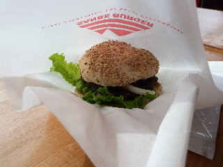
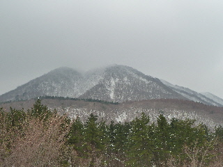

三瓶山で三瓶バーガーを食べました。
2012/01/28
三瓶名物？の三瓶バーガーを食べました。

色んな種類のバーガーがあったんですが、とりあえず普通の三瓶バーガーを選びました。
600円と高価な商品です。
こんがりと焼かれたハンバーグは、油が少な目でドライな感じでしたが、マヨネーズとケチャップ味が効いているので、濃い味にしあがっていました。
ご当地商品っていいですよね。
とりあえず、食べとけばなんか「行ったぞ！」って気分になれて好きです。
次は三瓶わさびバーガー（700円）に挑戦しようかな。

眺めがいい場所でした。